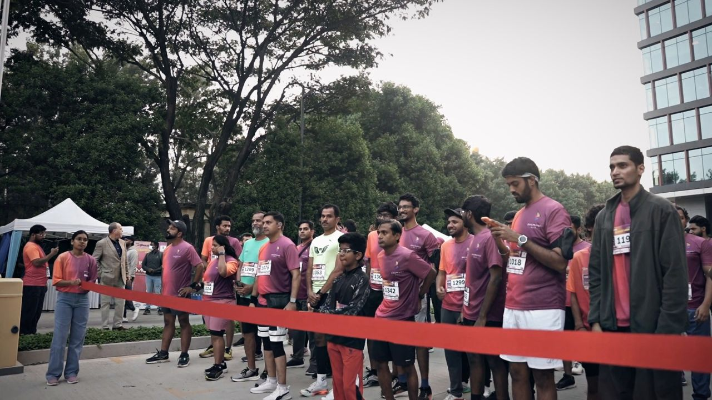
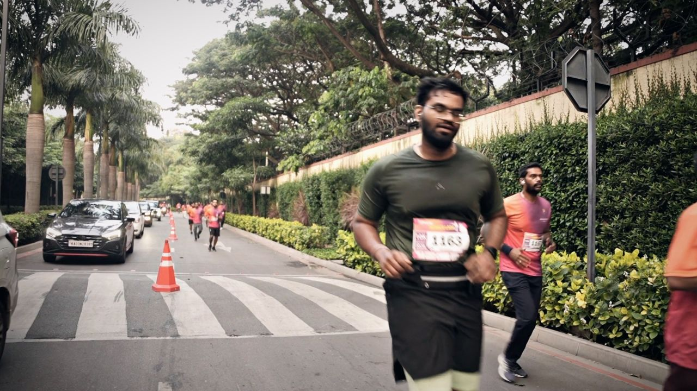
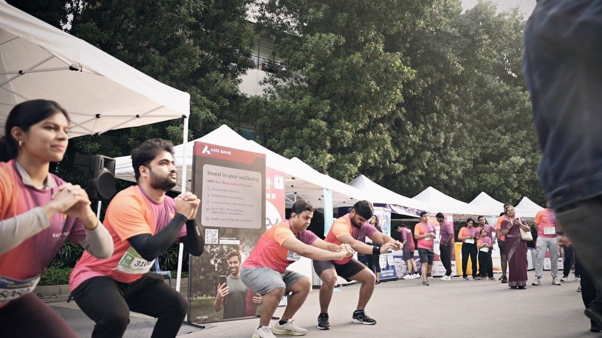
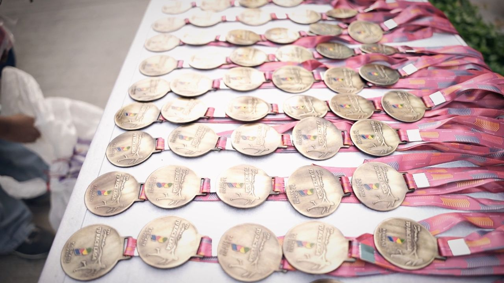

Fitness as the meeting point
We conceptualised and ran an integrated corporate fitness and brand engagement campaign that brought TVS Apache, Bagmane REIT and the workforce of Bengaluru's Bagmane business parks together.
The campaign used fitness as the platform to connect the Apache brand with a large, active corporate audience, first in the parks where they work and then on the start line.
- Campaign
- TVS Apache presents Tu Race Laga
- Venue
- Bagmane Tech Park, Bengaluru
- Date
- 31 October 2026
- Presenting sponsor
- TVS Apache
- In association with
- Bagmane REIT
- Tu Race Laga1,600participants and guests on event day, approximately
- Bagmane5business park locations
- Campaign40days of engagement before the run
- Categories3distances: 3K, 5K and 10K





Watch the films
What the campaign included
- Campaign visibility across five Bagmane business parks.
- Apache motorcycle displays and brand engagement zones.
- Standees and digital registration touchpoints.
- Apache-themed photo and video experiences.
- On-ground registration and participant acquisition.
- A flagship run with 3K, 5K and 10K categories.
- Brand integration through event branding, stage presence, participant engagement and sampling.
Our role
Campaign conceptualisation, brand integration, activation planning, on-ground execution and event management.
Let's create something that moves your brand forward.
Have a marketing challenge, a new product or an ambitious brand idea? Tell us about it and we will turn it into an experience.